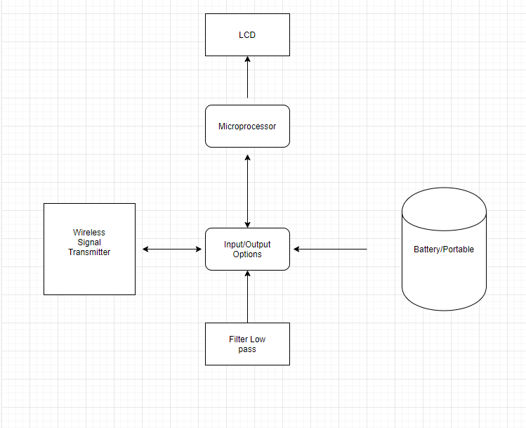
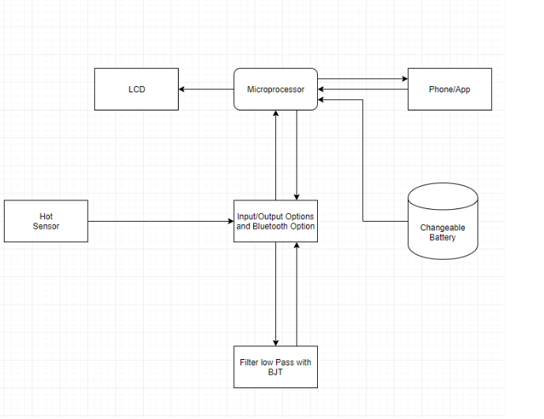

by Bryan Parada
SID:861027456 : Bpara001@ucr.edu
Journal 1: General Design
Design
In the first weeks I took our professors advice as a client requesting the main features he would like to see. With that in mind I personally designed a general Block Diagram to see how to best tackle the main components required. Researching typical low signal amplifiers, gave me some insight of how to better improve our design. After some discussion with my group, I decided to alter the design slightly. This step was crucial since our group consisted of two computer engineers and two electrical engineers and gave us a platform to work with. I distributed each box with what each person felt most comfortable researching and letting the group know how it would behave in our slack page. Which would allow us to build with a understanding of each blocks input and output behavior. It was not later, that we realized that we needed to alter my beggining block diagram. Which I expected since we were learning new things, but the objective of this schematic was to help build the foundation of the final product.
Images
 